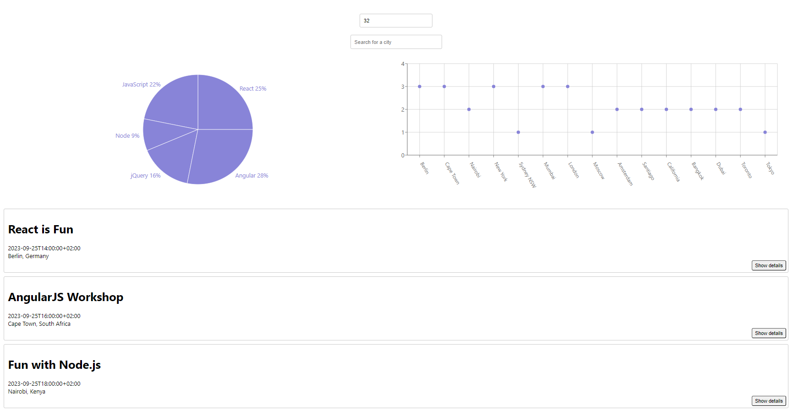

Work
Meet App
The Meet App is a serverless, progressive web application (PWA) realized with React using a test-driven development (TDD) technique. The application uses the Google Calendar API to fetch upcoming events.
MyFlix Angular Client
This app leverages MongoDB, Express.js, and Node.js on the backend and utilizes Angular, along with Angular Material, for the frontend. With this application, users can explore a curated collection of movies, access detailed information about each movie (including its description, genre, and director), and conveniently add movies to their personal list of favorites.